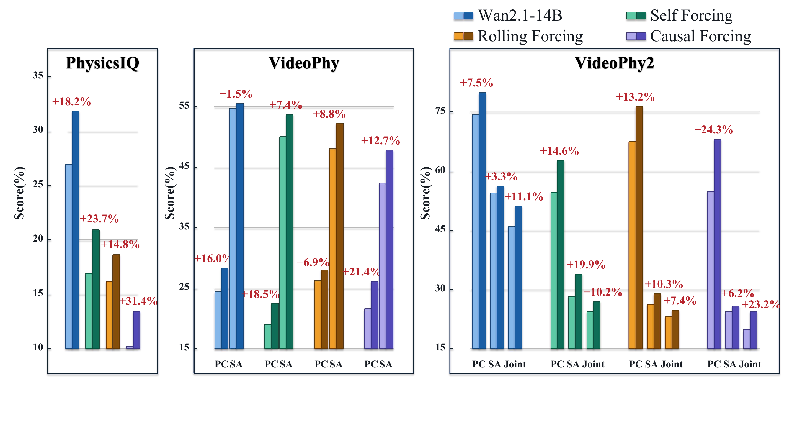
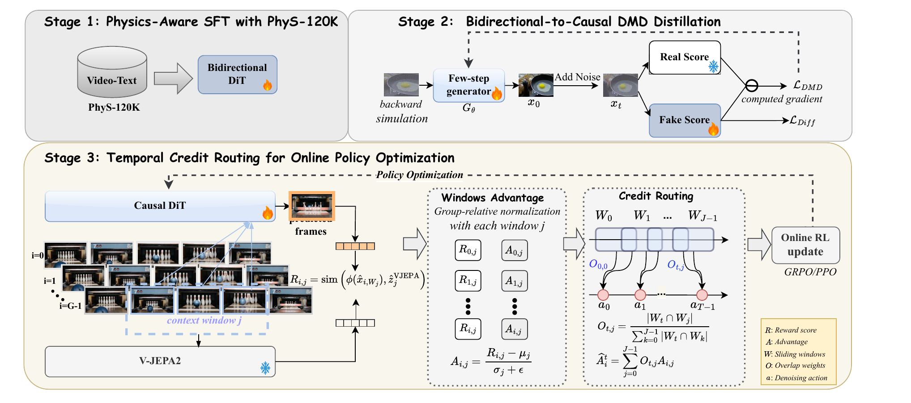
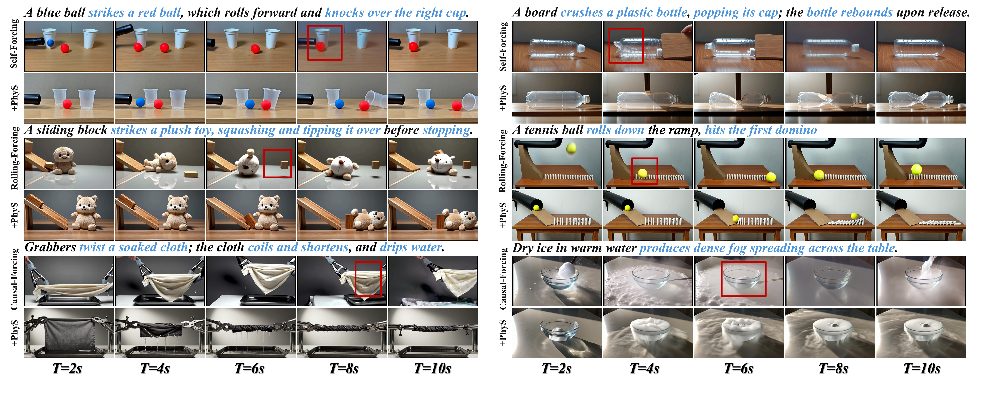
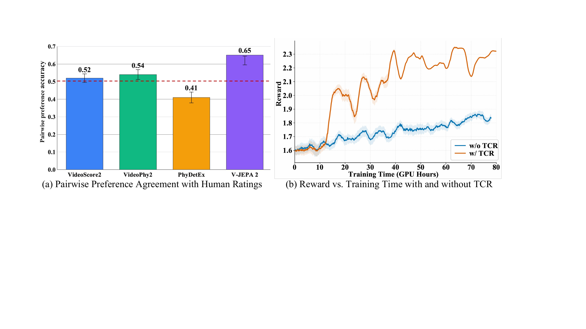

Why physical priors?
Streaming world models generate future video blocks autoregressively, but physically implausible contacts, deformations, fluids, and phase changes can accumulate over long rollouts.
Physical streaming world models
A three-stage framework that learns real-world physical priors, transfers them into few-step causal video generators, and aligns long-horizon rollouts with temporally routed physical feedback.
Streaming world models generate future video blocks autoregressively, but physically implausible contacts, deformations, fluids, and phase changes can accumulate over long rollouts.
PhyS injects physical knowledge with a 120K real-world physical-interaction dataset, distills it into lightweight causal generators, and uses Temporal Credit Routing for localized physical feedback.
PhyS improves bidirectional and causal video generators across PhysicsIQ, VideoPhy, VideoPhy2, PhyGenBench, and long-horizon rollout metrics.

Streaming world models predict future visual states through online rollouts while maintaining physically coherent dynamics over long horizons. However, their rollouts often violate basic physical constraints. PhyS is a three-stage framework for distilling physical priors into streaming world models. It constructs PhyS-120K, a dataset of 120K real-world physical-interaction videos with structured descriptions of object properties and causal state transitions; fine-tunes a bidirectional 14B DiT teacher; distills it into a lightweight 1.3B causal DiT; and aligns the causal generator with online reinforcement learning.
The core optimization component, Temporal Credit Routing, evaluates physical consistency over overlapping temporal windows and routes group-relative advantages to temporally aligned denoising actions. On PhysicsIQ, PhyS improves the Wan2.1-14B teacher by 18.2% and improves Self Forcing, Rolling Forcing, and Causal Forcing by 23.7%, 14.8%, and 31.4%, respectively.
PhyS-120K
PhyS-120K contains 120,804 videos spanning fluid dynamics, soft-body deformation, phase transitions, and rigid-body mechanics. Each clip is annotated with physical properties, state changes, and causal event sequences.


Method
Fine-tune a bidirectional Wan2.1-14B teacher on structured physical-interaction videos.
Transfer physical priors into few-step 1.3B causal DiT students for autoregressive streaming rollout.
Route overlapping-window physical rewards to temporally aligned denoising actions.

Results


@misc{zhao2027phys,
title = {Distilling Physical Priors into Streaming World Models},
author = {Liangliang Zhao and Junying Wang and Danni Yang and Yifan Chang and Bin Fu and Yu Qiao and Bowen Zhou and Yihao Liu},
year = {2027},
note = {Preprint}
}